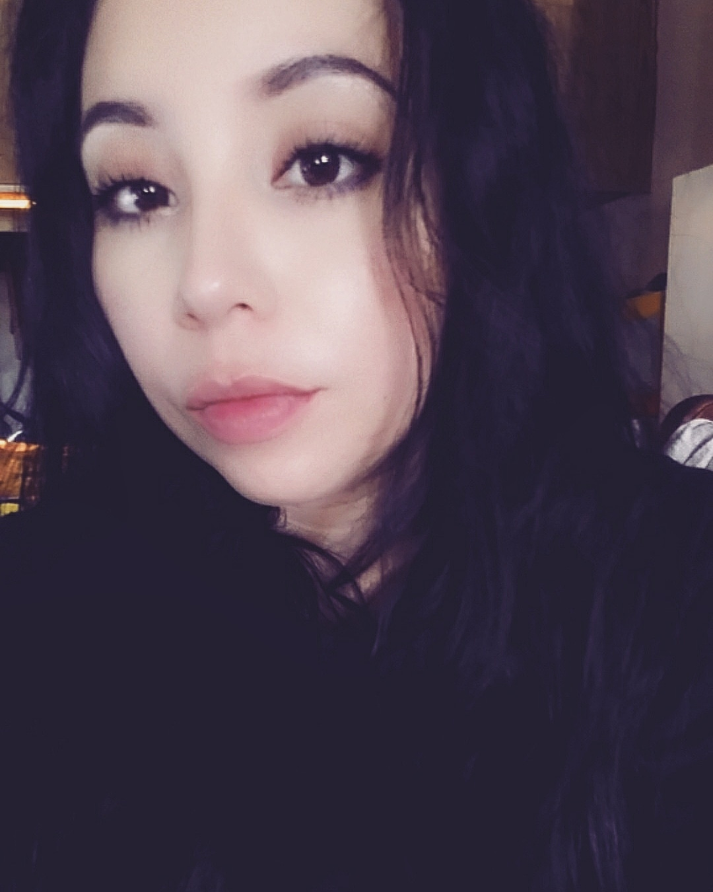

About Me
Thanks for visiting my page! :)
My name is Brittany Cordova, and I'm an aspiring web developer. This page is to showcase my projects and skills. I had a curiosity to HTML and CSS when I was 13 y/o thanks to myspace. I never really understood what I was doing when I played around with it on my page, but it did inspire me to make a fan website when I was in high school about my favorite video game at the time "Tales Of Symphonia". Where I displayed Fan-Art, Fan-Fiction, Trivia, and anything fan-related. After I turned 16 however, I got a job at my local grocery store where they demanded a lot of my free time. I eventually stopped pursuing any more knowledge about web development or web design as I started getting promotions at my job which made them demand even more of my time. Now I'm 27 and I finally feel like I should just go for what I always wanted, which is designing and making professional websites and applications. I'm still a beginner, and I have so much to learn still. Please feel free to contact me and look at my projects on this site and let me know what you think so far!
Thanks for your time!